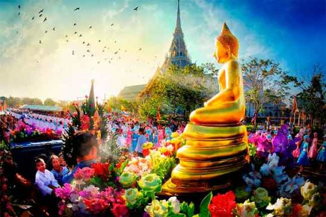
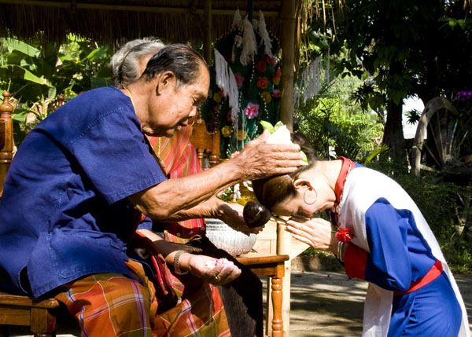

| วัฒนธรรมและประเพณีท้องถิ่น |
|---|
คำว่า “ท้องถิ่น” หมายถึง พื้นที่และขอบเขตที่ชุมชน หมู่บ้าน เมือง มีการปะทะสรรค์กันทางด้านสังคม เศรษฐกิจ และวัฒนธรรม จนปรากฏรูปแบบทางวัฒนธรรมที่เหมือนกัน และแตกต่างกันไปจากชุมชน หมู่บ้าน และเมือง ในท้องถิ่นอื่น ดังนั้นวัฒนธรรมและประเพณีของท้องถิ่นแต่ละแห่งอาจมีรูปแบบแตกต่างกันไปตามสภาพทางภูมิศาสตร์ ทรัพยากรธรรมชาติและสภาพแวดล้อม ซึ่งเราพอจะสรุปลักษณะสำคัญของวัฒนธรรมและประเพณีท้องถิ่นของไทย |
|  |
| ลักษณะของวัฒนธรรมไทย |
ความหมายของวัฒนธรรมมีหลายอย่าง เช่น หมายถึงขนบธรรมเนียมประเพณี สิ่งที่ดีงาม สิ่งที่ได้รับการปรุงแต่งให้ดีแล้ว หรือสิ่งที่ได้รับการยอมรับและยกย่องมาเป็นเวลานานแล้ว 👈ได้แก่
1. ศาสนา คนไทยส่วนใหญ่นับถือพระพุทธศาสนา แต่ก็มิได้กีดกันผู้ที่นับถือศาสนาอื่นแต่อย่างใด |
|  |